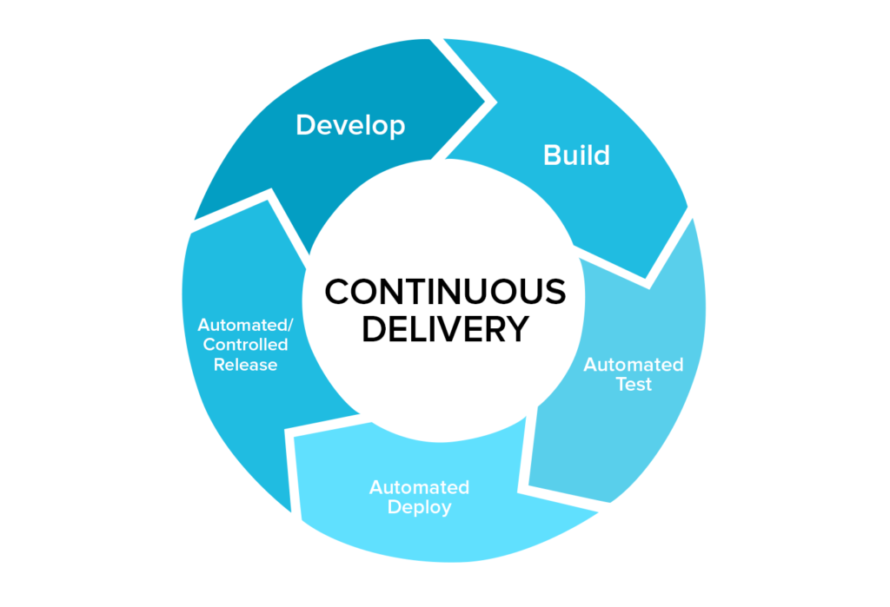

Descripción del curso

Resumen
El despliegue de sistemas de software es considerada una tarea costosa en ambientes de producción, debido a su alto índice de errores y a lo volátil de los resultados. Esta fragilidad se debe fundamentalmente al hecho de que todas las tareas se realizan de forma manual por personal capacitado, pero humanos al final de cuentas. El ser humano realiza tareas con un resultado exitoso dependendiendo del su contexto, de su estado de ánimo y de otros múltiples factores que pueden afectar la realización correcta de una o varias tareas.
Es en este punto que la automatización entra en escena, todas las tareas de despliegue de un sistema son potencialmente automatizables, a través de soluciones predeterminadas o personalizadas. El presente curso se orienta a brindar una aproximación de cómo llevar adelante un proceso de automatización, utilizando herramientas que flexibilizen y aseguren la calidad del despliegue de sistemas.
Contenido
El contenido del curso se divide en los siguientes temas:
- Fundamentos - Donde revisamos y analizamos el estado actual del despliegue de sistemas y los conceptos básicos de automatización
- Canales de despliegue - Donde revisamos los canales de despliegue y su funcionalidad en sistemas continuos
- Infraestructura de despliegue - Donde veremos las diferentes soluciones que proveen despliegue continuo como flujo de trabajo
- Adaptaciones de producción - Donde identificamos adaptaciones de producción que pueden preveerse con un flujo de despliegue continuo
Audiencia
La audiencia objetivo de este curso se compone de:
- Administradores de sistemas
- Desarrolladores de sistemas
- Profesionales del área de desarrollo y/o auditoría de sistemas
Requisitos
- Conocimiento básico de administración de sistemas
- Conocimiento de programación en cualquier lenguaje
- Manejo intermedio de sistemas Unix o Windows